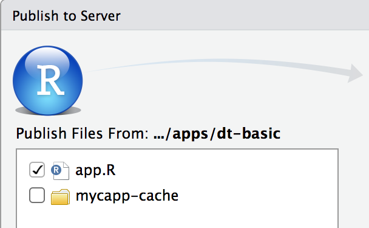

Using caching in Shiny to maximize performance
Suppose you want to scale your application so that it can serve more traffic. One way to do this, of course, is to increase the amount of computing power available by getting more servers. Another way to do this is to reduce the amount of computing power needed by your application.
With careful use of caching, you can dramatically improve the performance of your Shiny applications. This is especially true of applications where many users see the same information, such as data dashboards.
What is caching?
In Shiny 1.6.0, reactives and render functions can cache their values, using the bindCache() function. In other words, the application will do the computation with a given set of inputs once, and then after that, if those inputs are seen again, it can simply retrieve the value saved in the cache, instead of having to compute it again.
When does caching help?
Because caching saves computed values for use later, it is most effective when the same computation is done multiple times. If, for example, you have a data dashboard where many users see the same data and the same plots of the data, then with caching, the data processing and plotting can happen once, and after that, the results simply have to be retrieved from the cache.
This document covers the following:
- Using
bindCache():bindCache()can be used withreactive()andrenderfunctions, likerenderPlot()andrenderText(). - Using
memoise():memoise()can be used with “normal” R functions. - Cache scoping
- Best practices for deployed applications
- Frequently Asked Questions
Using bindCache()
Using bindCache() is simple: just pass your reactive() or render function to bindCache(). For example, if this is your reactive expression:
city_data <- reactive({
fetchData(input$city)
})You can replace it with:
city_data <- reactive({
fetchData(input$city)
}) %>%
bindCache(input$city)Notice that we used %>%, which is the pipe operator from the magrittr package. You don’t have to use the pipe operator, but it does make the code a bit easier to read.
We called bindCache(input$city) — the input$city part is used as the cache key. Suppose the value of input$city is "Boston". The first time that someone uses city_data() when "Boston" is the city, the user-written code inside of the reactive() will run; it will call fetchData("Boston") and store that in the cache, using "Boston" as the cache key.
If city_data() is called in the future without a change to input$city, it doesn’t have to run the code again; it simply returns the saved value. This works the same as regular a reactive(): they always store their most recent value.
Where the cached reactive() differs from a regular reactive() is with previous values. Suppose the value of input$city changes to "New York", and then back to "Boston". A normal reactive() would then have to re-run the code and go fetch the data for Boston. However, a cached reactive would be able to just get Boston data from the cache.
Click to see code for an example application
This is an example application that demonstrates how caching can speed up a computation. It simply multiplies input$x and input$y, with an artificial two-second delay. You can try out this application by copying and pasting into your R session:
library(shiny)
library(magrittr)
shinyApp(
ui = fluidPage(
sliderInput("x", "x", 1, 10, 5),
sliderInput("y", "y", 1, 10, 5),
div("x * y: "),
verbatimTextOutput("txt")
),
server = function(input, output) {
r <- reactive({
# The value expression is an _expensive_ computation
message("Doing expensive computation...")
Sys.sleep(2)
input$x * input$y
}) %>%
bindCache(input$x, input$y)
output$txt <- renderText(r())
}
)bindCache() with render functions
We’ve seen bindCache() used with reactive expressions, but it can also be used with render functions, like renderPlot(), renderText(), renderUI(), as well as render functions from other packages, like plotly::renderPlotly().
Here’s an example with renderTable(). Suppose that fetchData() returns a data frame:
output$table <- renderTable({
fetchData(input$city)
}) %>%
bindCache(input$city)Like our earlier example, input$city is used as the cache key. The first time it has particular value, like "Boston", the code inside the renderTable() will run. Later on, if input$city has the same value, it won’t have to run the code again; it can simply fetch the value from the cache.
Some render functions may require small modifications to work with caching. Others will not work with caching; one possible reason for this is that the render function modifies some internal state of the session, and so caching it would prevent necessary code from running.
Note that some render functions may need modifications in order to work with bindCache() — if you are a developer of such a function, see Updating render functions below.
Understanding cache keys
For caching to work well for your application, it’s important to understand how cache keys are computed and used.
As a general rule of thumb, the cache key expression should capture all reactive objects used in the reactive/render code. In this example, the renderText() uses three reactive objects: input$x, input$y, and r(). Additionally, all of them are passed to the bindCache() to use as cache key:
r <- reactive({ input$z * 2 })
output$txt <- renderText({
paste("The value is", input$x * input$y * r())
}) %>%
bindCache(input$x, input$y, r())If you don’t use all of them in the cache key, you can end up with a cache collision. For example, suppose that we only used input$x for the cache key, like this:
output$txt <- renderText({
paste("The value is", input$x * input$y * r())
}) %>%
bindCache(input$x)In this case, changes to input$y and r() would not cause the cache key to be recomputed, and incorrect values could be fetched from the cache.
After the cache key expression(s) are executed, they are combined into a list and then that list is hashed to produce a string, which is used as the actual cache key. This means that if a large object (for example, a data set) is used in the cache key, it can take a nontrivial amount of time to hash it. If this is an issue for you, see this question.
A second thing that bindCache() cache key expression(s) are used for is to set up reactive dependencies for the resulting object. Reactive dependencies are based on cache key expression(s), and not the original code in the reactive() or render function. (In technical terms, that code is run inside of isolate().)
The reason that the cache key expressions are used for reactive dependencies is because we don’t want upstream reactive invalidations to cause the user-code to re-execute; that could be an expensive operation. Instead, we want those invalidations to cause the cache key expressions to re-execute; this should be a fast operation. If the resulting key is not in the cache, only then do we want to re-execute the (expensive) user code.
Behind the scenes, bindCache() adds in a few more things as part of the cache key. The code that the user passes to reactive() is also added to cache key before it’s hashed. This is to avoid collisions among objects. In addition, information about the type of object is hashed, so that two different reactive/render functions that have the same user-provided expression will not collide. This may sound confusing, but this example should make it clear. The following will not have collisions among them, even though the bindCache() calls all have the same user-specified portion of the cache key and (in one pairing) the same code passed to reactive() and renderText():
# No collisions
r2 <- reactive( { input$x * 2 }) %>% bindCache(input$x)
r4 <- reactive( { input$x * 4 }) %>% bindCache(input$x)
output$txt4 <- renderText({ input$x * 4 }) %>% bindCache(input$x)bindCache() and renderPlot()
Plots can be cached with bindCache(). For example:
output$plot <- renderPlot({
data <- fetchData(input$city)
plot(data)
}) %>%
bindCache(input$city)In versions of Shiny prior to 1.6.0, the same could be done with renderCachedPlot() (and that code will still work with newer versions of Shiny):
output$plot <- renderCachedPlot({
data <- fetchData(input$city)
plot(data)
},
cacheKeyExpr = input$city
)Click to see an example application
This is an example application that demonstrates how caching can speed up a plot. For a given slider value, it makes a plot with an artificial two-second delay. You can try out this application by copying and pasting into your R session:
library(shiny)
library(magrittr)
shinyApp(
fluidPage(
sidebarLayout(
sidebarPanel(
sliderInput("n", "Number of points", 4, 32, value = 8, step = 4)
),
mainPanel(plotOutput("plot"))
)
),
function(input, output, session) {
output$plot <- renderPlot({
Sys.sleep(2) # Add an artificial delay
rownums <- seq_len(input$n)
plot(cars$speed[rownums], cars$dist[rownums],
xlim = range(cars$speed), ylim = range(cars$dist))
}) %>%
bindCache(input$n)
}
)Plot sizing
Sizing for cached plots works a bit differently from regular plots: with regular plots, the plot is rendered to exactly fit the div on the web page; with cached plots, the plot is rendered to a close-fitting size, and the web browser scales it to fit the div.
With an uncached renderPlot(), the plot is rendered at exactly the dimensions of the div containing the image in the browser. If the div is 500 pixels wide and 400 pixels tall, then it will create a plot that is exactly 500×400 pixels. If you resize the window, and the div then becomes 550x400 pixels (typically the width is variable, but the height is fixed), then Shiny will render another plot that is 550x400, which can take some time.
With renderPlot() %>% bindCache(), the plot is not rendered to be an exact fit. There are a number of possible sizes, and Shiny will render the plot to be the closest size that is larger than the div on the web page, and cache it. For example, possible widths include 400, 480, 576, 691, and so on, both smaller and larger; each width is 20% larger than the previous one. Heights work the same way.
If the width of the div is 450 pixels, then Shiny will render a plot that is 480 pixels wide and scale it down to fit the 450 pixel wide div. If the div is then resized to 500 pixels, then Shiny will render a plot that is 576 pixels wide.
The reason that cached plots work this way is so that it doesn’t have to cache a plot of every possible size; doing that would greatly reduce the usefuless of caching, since each browser would likely have a slightly different width, and so there would be very few cache hits.
This behavior is controlled by the sizePolicy parameter – it is a function that takes two numbers (the actual dimensions of the div) and returns two numbers (the dimensions of the plot that will be rendered). If you want to use a different strategy, you can pass in a different function. See here for more information.
Using bindCache() with bindEvent()
The bindEvent() function makes it easy to make reactive code run only when specified reactive values are invalidated. You may be familiar with the existing eventReactive() and observeEvent() functions. bindEvent() can be used with reactive() and observe() to do the same thing (and in fact, the older functions are now implemented using bindEvent()):
# These are equivalent:
eventReactive(input$button, { ... })
reactive({ ... }) %>% bindEvent(input$button)
# These are equivalent:
observeEvent(input$button, { ... })
observe({ ... }) %>% bindEvent(input$button)bindEvent() can also be used with render functions. For example, if you have a plot that you want to redraw only when a button is clicked, you could do this:
output$plot <- renderPlot({
plot(cars[seq_len(input$nrows), ])
}) %>%
bindEvent(input$button)bindCache() and bindEvent() can be used together:
output$plot <- renderPlot({
plot(cars[seq_len(input$nrows), ])
}) %>%
bindCache(input$nrows) %>%
bindEvent(input$button)This would cache the plot based on the value of input$nrows, and also make it so the plot redraws only when input$button is clicked. Keep in mind that the bind events are “decorators”, and that each one wraps up the object from the previous step; when the code is executed, you can think of them running in the reverse order of which they are applied (when using the pipe operator). So the bindEvent(input$button) acts as a gatekeeper for the bindCache(input$nrows): the input$button event must happen before the caching code looks at input$nrows. And then if the key isn’t already in the cache, it tells the code in renderPlot() to run.
Click to see an example application
This is an example application that demonstrates using bindCache() with bindEvent(). You can try out this application by copying and pasting into your R session:
library(shiny)
library(magrittr)
shinyApp(
fluidPage(
sidebarLayout(
sidebarPanel(
sliderInput("n", "Number of points", 4, 32, value = 8, step = 4),
actionButton("go", "Draw plot")
),
mainPanel(plotOutput("plot"))
)
),
function(input, output, session) {
output$plot <- renderPlot({
Sys.sleep(2) # Add an artificial delay
rownums <- seq_len(input$n)
plot(cars$speed[rownums], cars$dist[rownums],
xlim = range(cars$speed), ylim = range(cars$dist))
}) %>%
bindCache(input$n) %>%
bindEvent(input$go)
}
)Using memoise()
The memoise package provides the memoise() function, which takes a function as input, and returns a version of that function with that caches the result.
Memoized functions are similar to a reactive() used with bindCache(), although there are a few differences:
memoise()doesn’t know anything about reactivity, whereasbindCache()is designed to be used with reactive objects, and it handles reactive dependencies.memoise()automatically infers the expressions to use in the cache key (it uses the arguments to the original function), whereasbindCache()requires you to tell it what to use for the cache key.memoise()doesn’t automatically use an application or session-level cache; the package is separate from Shiny, so it doesn’t know about those things. (See the Cache scoping section for more.)
Using memoise() is easy. Suppose you have a function named myfun. Creating a memoized version of the function is as simple as passing it to memoise():
myfun <- function(n) {
# Do something slow
...
}
myfun_m <- memoise(myfun)Then you can call myfun_m() just as you would call myfun(), and it will return the same values, but with caching.
Note that, in order to work reliably, the function should be a pure function: the returned value should depend only on the input values to the function (and shouldn’t be influenced by any global variables), and the function shouldn’t alter any global state. If the function is not a pure function (for example, if the return value depends on a global variable) then it is possible for the memoized version to behave differently from the non-memoized version.
By default, memoise() creates a new cache_mem() for each memoized function, as the memoise package completely independent of Shiny. However, for a Shiny application, it usually makes sense to tell it to use the app or session-level cache.
Here’s how to memoize with an application-level cache:
# In app.R, server.R, or global.R
myfun <- function(x, y) {
...
}
# Memoize, using application-level cache
myfun_m <- memoise(slow_fn, cache = getShinyOption("cache"))To memoize with a session-level cache:
function(input, output, session) {
# Call memoise() in server function, and tell it to use session$cache
myfun_m <- memoise(slow_fn, cache = session$cache)
}Cache scoping
By default, when bindCache() is used, it is scoped to the running application. That means that it shares a cache with all user sessions connected to the application (within the R process). This is done with the cache parameter’s default value, "app" (as in bindCache(..., cache = "app")).
With an app-level cache scope, one user can benefit from the work done for another user’s session. In most cases, this is the best way to get performance improvements from caching. However, in some cases, this could leak information between sessions. For example, if the cache key does not fully encompass the inputs used by the value, then data could leak between the sessions. Or if a user sees that a cached reactive returns its value very quickly, they may be able to infer that someone else has already used it with the same values.
Instead of an application-level cache, you can scope the cache to the session, with cache="session". This removes the risk of information leaking between sessions, but then one session cannot benefit from computations performed in another session. For example, you could use one of the following:
# Use the application-level cache that is shared with other users' sessions
bindCache(..., cache = "app")
# Use the session-level cache that is unique to this user's session
bindCache(..., cache = "session")Another way to scope a cache is by passing a caching object directly to bindCache(). This can be useful if, for example, you want to use a a different type of cache with specific objects. We’ll learn more about this in Finer control over caching.
By default, a session-level cache’s lifetime ends when the user session ends, and the application-scoped cache’s lifetime ends when the application stops running.
The default application-level cache is a cache_mem() with a max_size 200 MB, and the default session-level cache is also a cache_mem() with a max_size of 200 MB.
To use different settings for an application-scoped cache, you can call shinyOptions() at the top of your app.R, server.R, or global.R. For example, this will create a cache with 500 MB of space instead of the default 200 MB:
# Set the application-level cache
shinyOptions(cache = cachem::cache_mem(max_size = 500e6))To use different settings for a session-scoped cache, you can set self$cache at the top of your server function. To use the session-scoped cache, when you call bindCache(), use cache="session". For example, this will create a 100 MB cache for the session:
function(input, output, session) {
# Set the session-level cache
session$cache <- cachem::cache_mem(max_size = 100e6)
r <- reactive(...) %>% bindCache(input$x, cache = "session")
...
}If you want to use a cache that is shared across multiple R processes, you can use a cachem::cache_disk(). You can create a application-level shared cache by putting this at the top of your app.R, server.R, or global.R:
shinyOptions(cache = cachem::cache_disk(file.path(dirname(tempdir()), "myapp-cache"))This will create a subdirectory in your system temp directory named myapp-cache (replace myapp-cache with a unique name of your choosing). On most platforms, this directory will be removed when your system reboots. This cache will persist across multiple starts and stops of the R process, as long as you do not reboot.
To have the cache persist even across reboots, you can create the cache in a location outside of the temp directory. For example, it could be a subdirectory of the application:
shinyOptions(cache = cachem::cache_disk("./myapp-cache"))In this case, resetting the cache will have to be done manually, by deleting the directory.
Using a cache_disk() can allow multiple concurrent R processes serving the same Shiny application to share a cache, which can result in even greater performance benefits. Bear in mind that the various platforms have different behavior for sharing disk space; see Best practices for deployed applications to learn more.
Finer control over caching
The "app" and "session" options for cache scoping offer a simple way to control cache scoping, but in some cases you may want to have finer control over the caching.
In addition to the application- and session-level caches, you can create separate cache objects and use them with specific calls to bindCache(). This could be useful if there are particular items that require different cache settings. For example, you might want a specific data set to be cached for only one hour, but other objects to be cached as usual.
# A cache with 5 minute max age, created outside of the server function, so it
# is shared across sessions.
cache_5min <- cachem::cache_mem(max_age = 5 * 60)
function(input, output, session) {
# This specific object will be cached with the cache_5min
output$plot <- renderPlot( ... ) %>%
bindCache(input$x, cache = cache_5min)
}Best practices for deployed applications
In most cases, the default memory cache provides enough of a performance boost so that no other changes need to be made to an application. With a memory cache, the cache can be shared among all Shiny user sessions within a single R process.
If your application has a large number of users and runs on multiple R processes, you can use a disk cache. Below are best practices for using a shared cache on various hosting platforms. If you have specialized needs, it might make sense to use a custom cache backed by Redis or other database.
Posit Connect
Posit Connect includes support for running multiple R process for an application. For applications deployed to Posit Connect, the best practice is to use a disk cache located in the application directory. To do so, add a line like this to your application:
# At the top of app.R, server.R, or global.R
shinyOptions(cache = cachem::cache_disk("./app_cache/cache/"))Note: the reason for using the path app_cache/cache/ is because (1) the rsconnect package (which is used to deploy the app) knows to not deploy the app_cache/ subdirectory and (2) inside of that directory, various packages create subdirectories. The sass package, for example, uses a directory called app_cache/sass/. The subdirectory app_cache/cache/ avoids colliding with other directories.
As of 2021-01-28, the CRAN version of rsconnect does not know to ignore app_cache/. This requires the development version of rsconnect, which can be installed with:**
remotes::install_github("rstudio/rsconnect")If you are using the CRAN version of rsconnect, and you have run the application on the computer which you are deploying from, it will have a local cache directory which should not be deployed. Make sure to deselect the cache directory when you deploy the application. In the RStudio IDE, you can do this:

The cache will be shared across multiple R processes running the same application. If you are using a multi-host cluster, the cache will also be shared across hosts, since the application directory resides on networked storage.
When the application is redeployed, the newly-deployed version will start with an empty cache, which ensures that new versions of the application do not inherit a stale cache.
Shiny Server and Shiny Server Pro
Shiny Server Open Source and Shiny Server Pro are typically run on a single server, though they can also be used on multiple servers, with a web proxy in front of them directing traffic to the individual servers.
With Shiny Server Open Source, on a server each application is served by at most a single R process, so a disk cache will not provide a performance benefit over a memory cache, because it cannot be shared. However, a disk cache can be useful if you want the cache to persist even after an R process shuts down.
With Shiny Server Pro, multiple processes on a single server can serve the same application, and so a shared disk cache can provide performance benefits. To create a persistent disk cache that can be shared across processes, use a subdirectory of the application for the cache directory. To do that, add a line like this to your application:
# At the top of app.R, server.R, or global.R
shinyOptions(cache = cachem::cache_disk("./app_cache/cache/"))Note: the reason for using the path app_cache/cache/ is because (1) the rsconnect package (which is used to deploy the app) knows to not deploy the app_cache/ subdirectory and (2) inside of that directory, various packages create subdirectories. The sass package, for example, uses a directory called app_cache/sass/. The subdirectory app_cache/cache/ avoids colliding with other directories.
As of 2021-01-28, the CRAN version of rsconnect does not know to ignore app_cache/. This requires the development version of rsconnect, which can be installed with:**
remotes::install_github("rstudio/rsconnect")When you update your application, R packages, or R itself, you should remove or clear the cache directory, since the cached objects may no longer be correct for the updated code.
If you are using multiple servers, you can use a shared disk cache on networked storage, although there may be a performance penalty with this.
shinyapps.io
Anywhere you deploy a Shiny application, multiple user sessions can share one R process. For applications deployed on Shinyapps.io, multiple R processes can run on one instance, and multiple instances can run simultaneously.
R processes within an instance share a filesystem, so it is possible to share a disk cache within an instance. Filesystems are not shared across instances, so a disk cache cannot be shared across instances.
On shinyapps.io, the application directory is reset after an instance is shut down, and there is currently no storage that persists after an application shuts down. An application typically shuts down after there are no more user sessions connected to the R processes in that instance (although it is possible to configure an application to have different behavior).
FAQ
I want to use a large object as the cache key, but hashing it is slow. How do I deal with this?
If the object that you want to use as the cache key is large, hashing it may take a non-trivial amount of time.
Suppose you have a cached plot that uses a reactive expression named bigData:
output$plot <- renderPlot({ ... }) %>%
bindCache(bigData())Every time bigData is invalidated, the cache key expression will be re-executed and the result will be hashed.
Before trying to optimize performance in these cases, first make sure that it’s a real problem. You can find out how much time it takes to hash the object by running system.time(rlang::hash(x)) on the object. For example, here is the time it takes to hash a data frame with 2 columns and 500,000 rows:
d <- data.frame(x = rnorm(500000), y = rnorm(500000))
system.time(rlang::hash(d))
#> user system elapsed
#> 0.001 0.000 0.001The total time is about 1 millisecond, which is fast enough that you don’t need to worry about it.
Antoher example: the diamonds data set from ggplot2 contains 10 columns and about 54,000 rows:
system.time(rlang::hash(ggplot2::diamonds))
#> user system elapsed
#> 0.001 0.000 0.002This takes about 2 milliseconds. If your data hashes this quickly, then you don’t have to worry about it; if it’s slow, keep reading.
There are a few ways to improve performance by reducing the amount of data that needs to be hashed. One way is to extract only the necessary piece of information from the data set and hash that. For example, if bigData() returns log data that has timestamps, then simply using the most recent timestamp in the data set may be sufficient for caching purposes.
output$plot <- renderPlot({ ... }) %>%
bindCache({
# Extract and return the latest time
df <- bigData()
max(df$time)
})The example above only needs to hash a single timestamp extracted from bigData(), which may greatly reduce hashing time. Keep in mind that it still takes a reactive dependency on bigData(), because it is executed in the cache key expressions.
Another possible way to deal with it is to not use bigData() in the cache key expression. If the value of bigData() depends on some other reactive input, then you could use that input as the cache key – as long as you are sure that the value of bigData() is uniquely determined by that reactive input. Here’s an example where bigData depends on input$city.
bigData <- reactive({ fetchData(input$city) })
output$plot <- renderPlot({ ... }) %>%
bindCache(bigData()) # Might be slow because of hashing bigData()Instead of using bigData() in the cache key, we can just use input$city:
output$plot <- renderPlot({ ... }) %>%
bindCache(input$city) # Fast, because input$city is smallAgain, this will work only if the value of bigData() is uniquely determined by the value input$city. If there are other things that could cause bigData() to change, then the cache could provide incorrect results due to cache collisions.
Can I customize the behavior of cachem::cache_mem and cachem::cache_disk?
cache_mem and cache_disk from the cachem package provide many options to customize behavior. The default for both is to set a maximum size for the cache and to use a LRU (least-recently used) eviction policy. However, it is also possible to expire objects after a certain amount of time, by setting the max_age.
For example, if you want to use an app-level memory cache with unlimited size, but where the objects expire after five minutes, you would do the following at the top of your app.R/server.R:
shinyOptions(cache = cachem::cache_mem(max_size = Inf, max_age = 300))See the cachem documentation for more information about how to customize caching behavior.
Can I cache objects with reference semantics?
Some R objects, such as environments, R6 objects, and external pointers, have reference semantics. This means that altering the object in one place will cause anyone else with a reference to it to also see the altered version.
With caches that serialize objects (essentially, anything besides cache_mem), these objects may not behave as expected when restored. With a cache_disk, you can have it warn when reference objects are serialized. For example, here’s how to set your app-level cache to a cache_disk that warns:
shinyOptions(cache = cachem::cache_disk(warn_ref_objects = TRUE))Then, when serializing a reference object, it will emit a warning like this:
Warning message:
In d$set(key, value) :
A reference object was cached in a serialized format. The restored object may not work as expected.When a cache_disk stores an R object, it serializes the object and then saves the serialized data to disk. However, reference objects such as environments and external pointers cannot be guaranteed to restore exactly the same as when they are stored, especially if they are restored in another R session.
The warning will be shown when caching an environment, as below:
dc <- cachem::cache_disk(warn_ref_objects = TRUE)
e <- new.env()
dc$set("x", e)
#> Warning message:
#> In dc$set("x", e) :
#> A reference object was cached in a serialized format. The restored object may not work as expected.But other objects also can contain environments. Functions, for instance, consist of formals (the function parameters), body, and environment, and so serializing a function will result in the same warning.
f <- function() 1+1
dc$set("x", f)
#> Warning message:
#> In dc$set("x", f) :
#> A reference object was cached in a serialized format. The restored object may not work as expected.A reactive expression from Shiny is a special function, and it will result in the warning as well:
r <- reactive(1)
dc$set("x", r)
#> Warning message:
#> In dc$set("x", r) :
#> A reference object was cached in a serialized format. The restored object may not work as expected.In the context of a bindCache(), this warning can help you detect accidental usage of a reactive expression in the cache key, when you actually intended to use the result of a reactive expression in the cache key.
# r is some reactive expression
r <- reactive(...)
# Bad: Using reactive expression in cacheKeyExpr. This will raise a warning.
renderPlot(...) %>% bindCache(r)
# Good: Using the value of reactive expression in cacheKeyExpr.
renderCachedPlot(...) %>% bindCache(r())Can I write my own caching backend?
It is possible to use a caching backend other than cachem’s cache_mem and cache_disk. To do this, you simply need to supply a caching object – that is, an object that has $get() and $set() methods on it. In this section, we’ll see how to create a cache object that can be used by Shiny.
Here is a function that creates an extremely simple caching object:
simple_cache <- function() {
e <- new.env(parent = emptyenv())
list(
get = function(key) {
if (exists(key, envir = e, inherits = FALSE)) {
return(e[[key]])
} else {
return(structure(list(), class = "key_missing"))
}
},
set = function(key, value) {
e[[key]] <- value
}
)
}To use it:
sc <- simple_cache()
sc$set("abc", 123)
sc$get("abc")
#> [1] 123
# Calling $get() on a missing key returns a key_missing object
sc$get("xyz")
#> <Key Missing>The object returned by simple_cache() does all the things that a Shiny application needs from a cache. The requirements are very simple:
- There is a
$set(key, value)method which takes a string key, and any R object as a value. - There is a
$get(key)method which returns a cached value, and if the value is not present, returns an empty list with class"key_missing". (This is the same as whatcachem::key_missing()returns.)
Our example is a simple memory cache – unlike cachem’s cache_mem(), it doesn’t do any pruning, and so it will just keep on growing arbitrarily large. But it does the job for this example.
If you put the following at the top of app.R, server.R, or global.R, it will use one of these simple cache objects as the default application-level cache.
shinyOptions(cache = simple_cache())Similarly, you can put it in the server function to serve as the session-level cache:
function(input, output, session) {
shinyOptions(cache = simple_cache())
# ...
}Finally, you can also create the cache object and pass it directly to bindCache(). As described in the previous section, the cache would be shared among all Shiny sessions connected to this R process, but other plots in the app would use the default app-level cache.
# Note that this is defined outside of the server function.
my_cache <- simple_cache()
function(input, output, session) {
output$plot <- renderPlot({ ... }) %>%
bindCache(cache = my_cache)
}Can I use Redis for the cache?
In the previous section, we saw how to create a simple cache. Here we’ll create a cache that uses a local Redis store as the backend. In this case, we’ll use an R6 class for the caching objects, instead of a list.
library(shiny)
library(redux)
library(R6)
RedisCache <- R6Class("RedisCache",
public = list(
initialize = function(..., namespace = NULL) {
private$r <- redux::hiredis(...)
# Configure redis as a cache with a 20 MB capacity
private$r$CONFIG_SET("maxmemory", "20mb")
private$r$CONFIG_SET("maxmemory-policy", "allkeys-lru")
private$namespace <- namespace
},
get = function(key) {
key <- paste0(private$namespace, "-", key)
s_value <- private$r$GET(key)
if (is.null(s_value)) {
return(structure(list(), class = "key_missing"))
}
unserialize(s_value)
},
set = function(key, value) {
key <- paste0(private$namespace, "-", key)
s_value <- serialize(value, NULL)
private$r$SET(key, s_value)
}
),
private = list(
r = NULL,
namespace = NULL
)
)Redis provides a key-value store, and our RedisCache objects can have a namespace – which is simply implemented as a prefix to the keys. So of the namespace is "myapp" and you store an object with the key "abc", then it will be stored in Redis with the namespaced key "myapp-abc". This allows you to share the same Redis store among multiple different Shiny applications, each with its own namespace.
Before we create a cache, we need to start up a local Redis server. On a Mac, you can do this by running the following from the command line:
# Install redis via Homebrew
brew install redis
redis-server /usr/local/etc/redis.confNow that Redis is running, we can create a RedisCache object and test it out:
rc <- RedisCache$new(namespace = "test")
rc$set("abc", 123)
rc$get("abc")
#> [1] 123
# Getting a key that's not present
rc$get("xyz")
#> <Key Missing>This example is the same as the earlier ones, except that it uses a Redis cache as the default application-level cache. (Note once again that if you run shinyOptions(cache=...) from the console instead of in an app.R/server.R, it will set the default cache for the rest of the R session instead of for the duration of the application.)
## app.R ##
shinyOptions(cache = RedisCache$new(namespace = "myapp"))
shinyApp(
fluidPage(
sidebarLayout(
sidebarPanel(
sliderInput("n", "Number of points", 4, 32, value = 8, step = 4)
),
mainPanel(plotOutput("plot"))
)
),
function(input, output, session) {
output$plot <- renderPlot({
Sys.sleep(2) # Add an artificial delay
seqn <- seq_len(input$n)
plot(mtcars$wt[seqn], mtcars$mpg[seqn],
xlim = range(mtcars$wt), ylim = range(mtcars$mpg))
}) %>%
bindCache(input$n)
# Another alternative: set the cache just for this plot.
# bindCache(cache = RedisCache$new(namespace = "myapp-plot"))
)
}
)The Redis cache can be shared among multiple R processes running the same app, as long as they point to the same Redis cache and use the same namespace (in this case, "myapp").
An alternative is to use the Redis cache just for a specific plot. In the code above, the renderCachedPlot() call has a commented-out cache argument. If you uncomment the cache argument (instead of calling shinyOptions() above) then that plot will use the Redis cache, with the namespace "myapp-plot". Multiple instances of this application, or multiple different applications could share the Redis store using the same namespace.
In the RedisCache class defined above, the Redis store was configured to behave as a cache with a 20 MB capacity and a LRU (least-recently-used) expiration policy, by the following lines:
private$r$CONFIG_SET("maxmemory", "20mb")
private$r$CONFIG_SET("maxmemory-policy", "allkeys-lru")If the Redis store is shared among applications, it may not be a good idea to configure Redis from R, because one application may set certain settings, and then another application may change them. In these cases, it is advisable to configure the Redis store using the Redis configuration file. In production, you should also use a more secure configuration, including a password for Redis.
Can I use storr for the caching backend?
The storr package provides a consistent key-value interface for several different kinds of backends, including SQLite, Postgres, R environments, RDS files, and more.
It’s possible to wrap a storr object so that it behaves in a way that is compatible with what Shiny’s caching objects expect. The main difference is that, when cachem’s cache_mem or cache_disk try to retrieve a key that is not present, they return a key_missing object, while storr throws a KeyError.
In the code below, the keyMissingCacheDecorator takes a storr object, and wraps it so that when the get() method encounters a missing key, it returns a key_missing object instead of throwing a KeyError.
keyMissingCacheDecorator <- function(cacheObj) {
list(
get = function(key) {
is_missing <- FALSE
tryCatch(
{ val <- cacheObj$get(key) },
KeyError = function(e) {
is_missing <<- TRUE
}
)
if (is_missing) {
return(structure(list(), class = "key_missing"))
}
val
},
set = cacheObj$set
)
}To test it out, we can use a storr cache that is backed by an R environment – this is similar to a cachem::cache_mem(), but without pruning.
library(storr)
# Create the storr cache
se <- storr_environment()
# Wrap it in the decorator
se_cache <- keyMissingCacheDecorator(se)
# Test it out
se_cache$set('x',123)
se_cache$get('x')
#> [1] 123
se_cache$get('abc')
#> <Key Missing>The keyMissingCacheDecorator can be used with any storr cache, not just the environment-backed cache used in the example above.
How do I make my render function to work with caching?
If you are a package developer and have created a render function, it is possible that it will just work with bindCache(), but it See the documentation for bindCache() for more information about this.